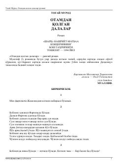

OQO'zbek xalqining mashaqqatli hayoti va dehqonchilik qismati haqidagi ramziy roman.
Ushbu roman o'zbek xalqining og'ir qismati va dehqonchilik mashaqqatlari haqida hikoya qiladi. Asar bosh qahramon Dehqonqul timsolida o'z yurtida qadr topmagan, umri dalalarda o'tgan mehnatkash xalqning fojiali taqdirini badiiy talqin etadi.